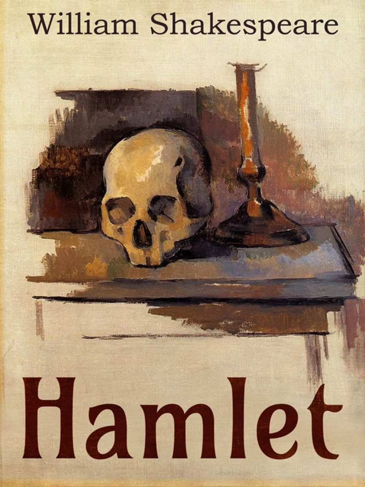
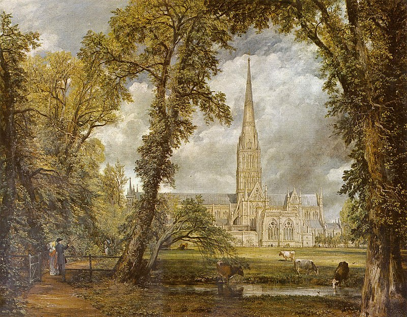
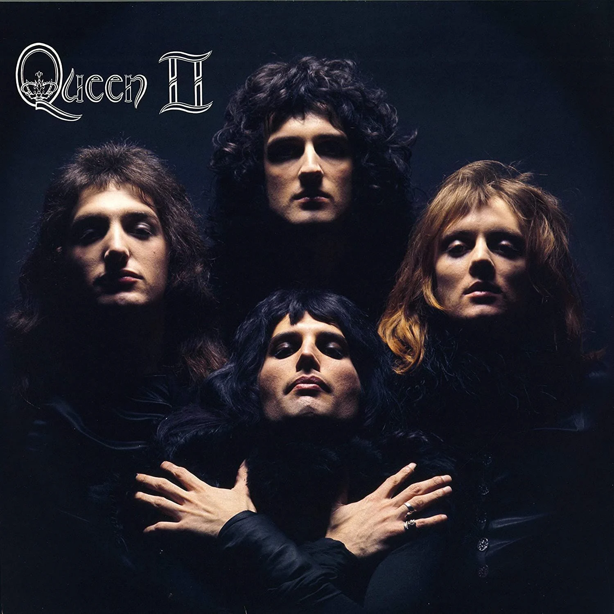
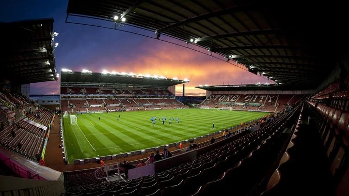
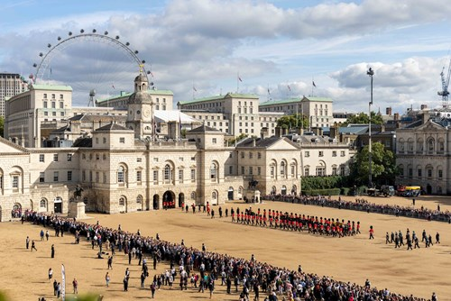

Književnost
Kroz svoju povijest Engleska je bila domovina mnogim velikim piscima kao štu su William Shakespeare, koji se smatra jednim od najvažnijih pisaca u povijesti,
napisao je neka od najpoznatijih djela kao štu su "Hamlet" i "Romeo i Julia", Charles Dickens koji je napisao djela "Oliver Twist" i "Božićna priča", Jane Austen
koja je napisala "Pons i predrasude", George Orwell koji je napisao "Životinjsku farmu", te nekim današnjim piscima kao što je J.K. Rowling koja je napisala "Harry Pottera".

Umjetnost
Engleska ima bogatu povijest slikarstva od srednjovijekovnih freski do današnjih umjetnika kao što je Damien Hirst koji je poznat po djelima očuvanih mrtvih životinja.
Iako je umjetnist bila jača u nekim ostalim državama kao što je Italija, mnogi engleski umjetnici se ističu u različitim razdobljima poput Nicholasa Hilliarda u renesansi,
Thomasa Gainsborougha u 18. stoljeću i J.M.W. Turnera u romantizmu.

Glazba
Engleska ima bogatu glazbenu povijest te je jedna od najutjecajnijih država u tom području. Još od klasične glazbe folklorne glazbe iz srednjeg vijeka gdje se ističu mnogi
engleski skladatelji kao što su Henry Purcelli Edward Elgar, no največi utjecaj na glazbu je engleska imala u žanrovima popularne glazbe i rocka gdje su se pojavili bendovi
poput Beatlesa koji se smatra najutjecajnijim bendom ikad,Queena koji je spajao rock, operu i klasičnu glazbu te je bio globalni fenomen u 1970-im i do 1991. kada je preminuo
glavni vokal Freddie Mercury koji se je smatrao jednim od najboljih pjevača ikad,te brojni drugi poznati bendovi i muzičari poput Rolling Stonesa i Davida Bowiea.
Engleska također ima velik utjecaj u modernoj glazbi poput elektronske glazbe.

Sport
Engleska je kolijevka mnogih današnjih sportova, a sport ima ključnu ulogu u engleskoj svakodnevnici i kulturi. Daleko najpopularniji sport na svijetu je nogomet ,a Engleska
se smatra kolijevkom modernog nogometa. Engleska nogometna reprezentacija ima brojne uspjehe od koji je najveći osvajanje zlata na svjetskom prvenstvu 1966., neki od najpoznatijih
engleskih nogometni klubova su: Manchester United, Manchester City Liverpool, Arsenal. Osim nogometa engleska je bila i početak kriketa i ragbija. Od ostalih sportova valja izdvojiti
Wimbledon, najstariji teniski turnir, i Andy Murraya koji je jedan od najpoznatijih engleski tenisača, snooker koji je osobito popularan u engleskoj, a engleski igrač Ronnie O'Sullivan
smatran je jednim od najboljih na svijetu. Engleska je imala velik utjecaj u razvoju modernih boksačkih pravila poznata kao Queensberry prsvila, neki od poznatih engleskih boksača su
Antony Joshua i Lennox Lewis.

Običaji
Engleska ima velik broj i veliku ljubav prema svojim običajima. Čaj u pet sati jedan je od najpoznatijih običaja u engleskoj, a simbolizira eleganciju i opuštanje.
Engleska ima iznimno bogatu pub kulturu. Pub quizovi su popularni i služe za okupljanje zajednice kroz prijateljsko natjecanje. 23. travnja se obilježava dan svetog Jurja
koji je zaštitnik Engleske, slavi se uz parade i koncerte. Kraljevska obitelj ima jako važnu ulogu u engleskoj kulturi te društvenom i političkom smislu. Ona predstavlja Englesku
i Ujedinjeno kraljevstvo u svijetu,a kralj ili kraljica je državna figura iako je uloga monarha u Engleskoj simbolistička.
